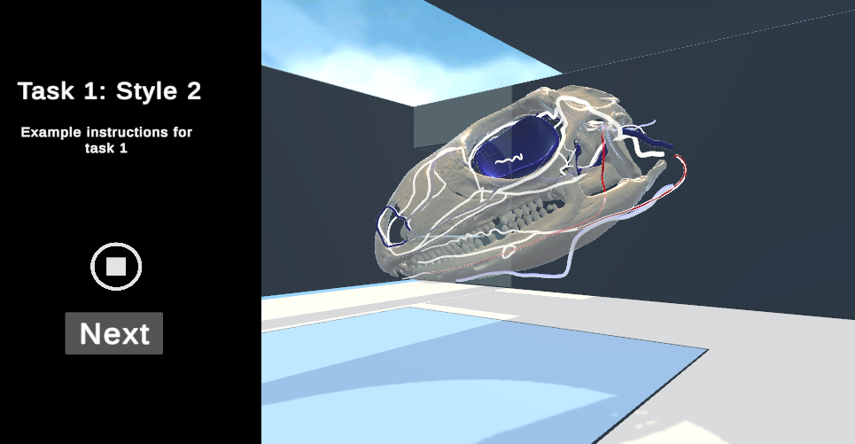

Rendering Style Study
Built using Unity 3D and C#
This is a project I have worked on as a part of the Vascular VR Project under the Surf Lab at UF. This is part of the Rendering Styles Study with the stated goal of determining which type of rendering style (DVR, Isosurface, Semi-Transparent Isosurface or Lego-Stippling) works best for representing CT and MRI scans of medical data in a VR environment and whether this is different than what works in a Desktop environment. While I do not have permission to share the code base or a live demo, I was given permission to share screen shots and explanations of my involvement.
Participants in the study would be given one of three tasks and asked to complete it in each of the 4 rendering styles with us keeping track of how well they were able to complete it and how difficult they rated it. Above is pictured task 1 in the lego-stippling style where the user would be asked to identify certain structures from what they see. This is taken from the VR view where they have physical controls and can move their head and hands to move around the scene or manipulate the render as well as benefit from stereoscopic depth cues.
The above image, however, comes from the desktop view with a DVR render of an Iguana skull where the participant would be able to interact with the scene by clicking and dragging or using the mouse wheel to scroll in and out. This render would likely be used in a Shape Description task where the user would be given a specific bone and asked to match it to a curve or shape that best matches it.
My role was to create the VR and Desktop environments, creating the interaction methods (rotation, translation, zoom etc.) for desktop set up the UI and task flow for the study, create the data logging system to track user and render positions/rotations, import our custom lego-stippling rendering method into the project and make sure all of the systems worked as intended. Everything that you see in the images that is not the render itself was put together by me. Additionally, I was involved with designing the tasks, choosing what rendering styles to use and identifying good data sets to use. For all of those tasks I read the literature surrounding the topic and became well versed in the different VR interaction methods and different rendering techniques that have been tried in the space before with their benefits and drawbacks. Overall, I have learned a lot about working with VR environments, 3D rendering, handling medical data, setting up usable UIs and working in game/physics engines in general.
Takeaways
Overall, I have learned a lot about working with VR environments, 3D rendering, handling medical data, setting up usable UIs and working in game/physics engines in general. Working on this and the main project in this lab have been the greatest benefits to developing my skills and started me down the path of learning game and physics engines that I used to make many of my other projects.